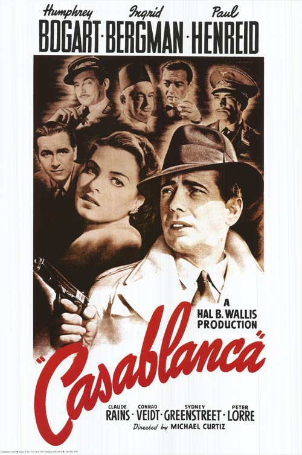

Casablanca
16th Academy Awards
(Oscars 1944)
8 Nominations, 3 Awards
| Nominations | ||
|---|---|---|
| Category | Nominees | Result |
| Outstanding Motion Picture | Warner Bros. | Won |
| Actor | Humphrey Bogart | Nominated |
| Actor in a Supporting Role | Claude Rains | Nominated |
| Directing | Michael Curtiz | Won |
| Writing (Screenplay) | Howard Koch, Julius J. Epstein, and Philip G. Epstein | Won |
| Cinematography (Black-and-White) | Arthur Edeson | Nominated |
| Film Editing | Owen Marks | Nominated |
| Music (Music Score of a Dramatic or Comedy Picture) | Max Steiner | Nominated |